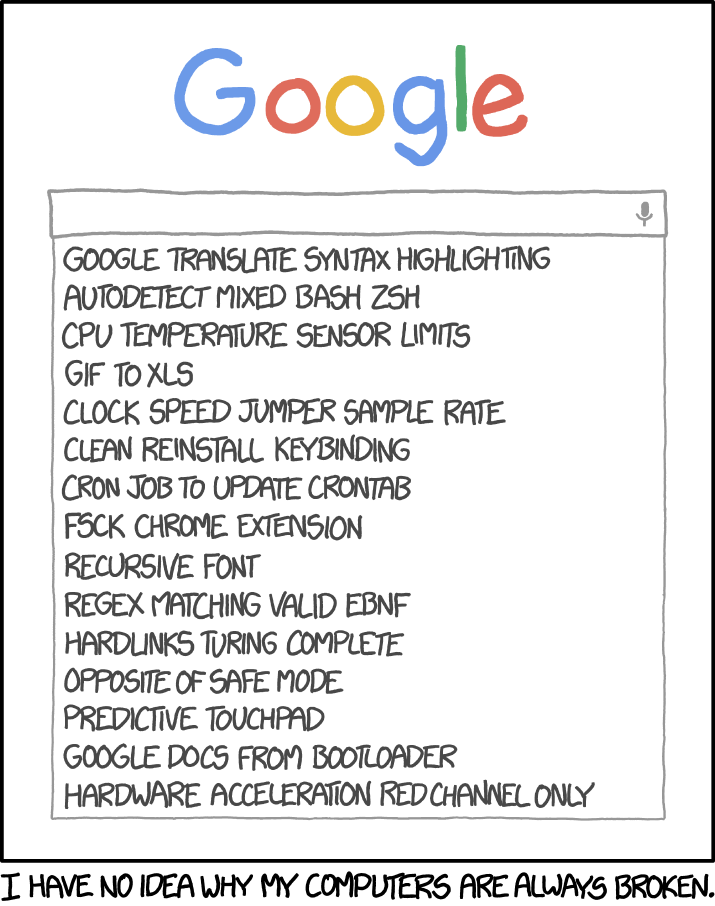
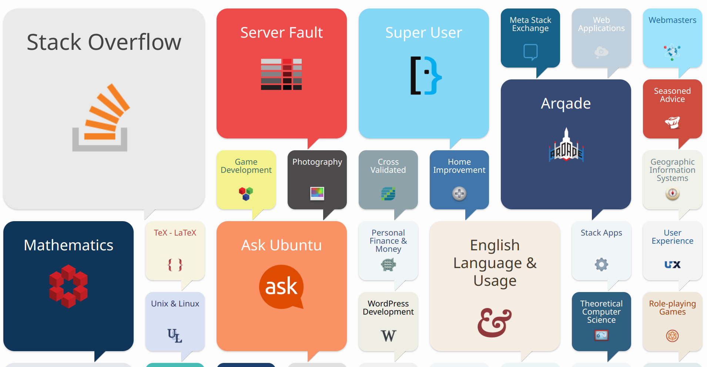
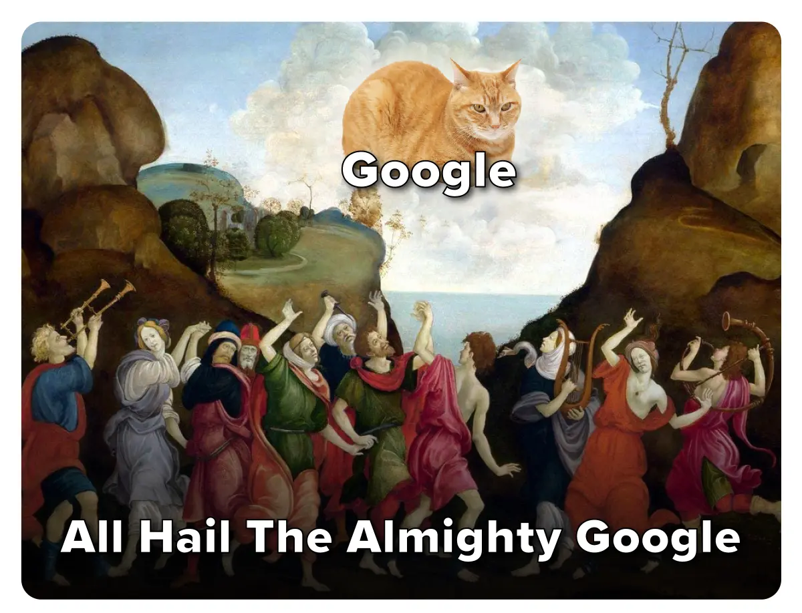
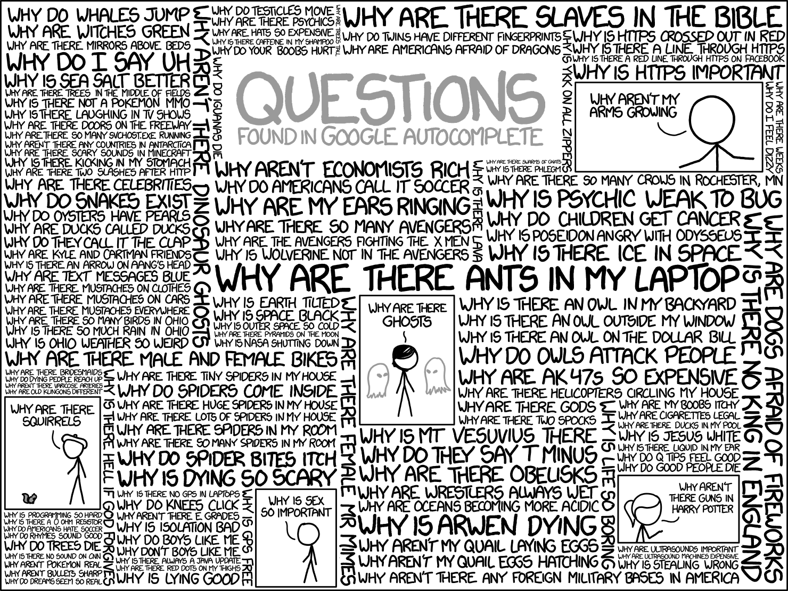

<div style="display: flex; justify-content: center; align-items: center; height: 700px;"> <div style="text-align: center; padding: 40px; background-color: white; border: 2px solid rgb(0, 63, 163); border-radius: 20px; box-shadow: 0 0 20px rgba(0,0,0,0.1);"> <h1 style="font-size: 48px; font-weight: bold; margin-bottom: 20px; color: #333;">SI100+ 2024 Lecture x</h1> <p style="font-size: 24px; color: #666;">如何用搜索解决问题</p> <p style="font-size: 16px; color: #999; margin-top: 20px;">SI100+ 2024 Staff | 2024-08-23</p> </div> </div> <!--s--> <div class="middle center"> <div style="width: 100%"> # Part.0 我该搜吗？ </div> </div> <!--v--> ## 情景回想 - 你困惑的不是一个用来锻炼你的问题 - 比如一些值得一做的习题之外的问题 - 你已经尝试过了一些方法，但是没有找到答案 - 你可能有一个解决方法，但是不确定是否合适/有没有更好的方法 - **你搜索这个问题不会导致学术不端** </br> <div class="center"> <font size="30">**我应该搜索吗？**</font> </div> <!--v--> <div class="middle center"> <div style="width: 100%"> # **去搜啊，为什么不搜？** </div> </div> <!--v--> <div class="middle center"> <div style="width: 100%"> # **为什么不搜！！！** </div> </div> <!--v--> ## 你应该开始搜索的 101 个理由 - 你现在真的遇到问题了，而遇到问题就应该**解决问题** - 网上很可能有这个问题的解决方案 - 只靠自己摸索不一定能解决问题 - 可能会搜索到高于这个问题的更深入的知识，扩充你的知识面 - 搜索没有任何的代价 - 这一次没有搞懂，下一次还要再费时间 - 别人通常没有义务帮你解决问题，你应该感谢他们的帮助，但是搜索引擎无所谓！ - 找出思路里面潜在的错误 - ...... <!--s--> <div class="middle center"> <div style="width: 100%"> # Part.1 使用什么搜索 </div> </div> <!--v--> ## 通用的搜索引擎 <div style=" margin-top: 10px; margin-right: 10px;" markdown="1">  <br/> 这些搜索引擎可以解决大部分问题 - Google - Bing - CN Bing 国内版/百度（仅适合用于搜索中文社区内容） - DuckDuckGo（使用者较少） </div> <!--v--> ## 图片搜索 有人发了一张图片，你找他一问，他说 “我也是转发的，找不到后续” 你：😄 `->` 😧 `->` 😡 - [Google Images](https://images.google.com/): 最通用，对截取的图片搜索效果相对更好 - [Yandex Images](https://yandex.com/images/): 俄罗斯搜索引擎，图片搜索效果好 - [百度图片](https://image.baidu.com/): 效果较差 - [trace.moe](https://trace.moe/): 以图搜番 - [SauceNao](https://saucenao.com/): 只能从完整图片搜索到原图 - 淘宝 App：拍照搜物品，维修工师傅从空调里面卸下来的电磁阀都能搜到 **通用搜索流程**：在 Google Images/Yandex Images 里面搜索，在结果里面找到更清晰或更完整的图片，也可以提取关键词然后用文字搜索，如果是二刺螈图片，把搜到的比较完整的图片放到 SauceNao 里面搜索出处，搜物品可以用淘宝拍照搜索 <!--v--> ## 专业性强/特定领域的搜索 可以先用通用的搜索引擎找到那个领域的网站，然后继续检索 - [Google Scholar](https://scholar.google.com/): 学术搜索引擎，搜索论文 - [Sourcegraph](https://sourcegraph.com/): 搜索网上的代码 - [Wolfram Alpha](https://www.wolframalpha.com/): 数学搜索引擎，甚至能给出逐步解题过程 - 对应领域的社区：光是 [Stack Exchange](https://stackexchange.com/sites) 下就有各种主题的子社区，只用来搜索的话，小红书、知乎也是不错的选择 - 学校提供的数据库，可以在图书馆网站找到数据库列表  <!--v--> ## 搜索概念/定义 - [Wikipedia](https://www.wikipedia.org/) - 不建议使用维基百科自带的搜索功能，直接在 Google 里面加上 Wikipedia 关键词搜索 - 有些词条没有中文/中文版质量差，推荐看英文版 - [Merriam-Webster](https://www.merriam-webster.com/): 最权威的英语词典之一 - RTFM: *the friendly manual*，有时候直接看官方文档是最好的选择 </br> <img src="images/tar.png" width="70%" style="display: block; margin: 0 auto;"> <div style="text-align: center;"> 有些时候还是坚持 TL; DR 原则更好 </div> <!--v--> ## 其他 - 对于时效性极强，还没有大范围出现的内容，在社交媒体搜索效果更好 - 搜索某个文件时，可以选择在百度文库搜索，得到结果后复制精确的标题再搜索其他的可以免费下载的网站有没有资源 - 搜索电子书请自行了解如何访问 zlibrary 或者 libgen - 网站挂了，可以用 whois 查询域名的历史解析记录，可以在 [Wayback Machine](https://archive.org/web/) 上找到历史快照 - [Internet Archive](https://archive.org/): 互联网档案馆，有很多资源 - 使用浏览器脚本，优化搜索体验 <!--s--> <div class="middle center"> <div style="width: 100%"> # Part.2 把什么丢到搜索框里 </div> </div> <!--v--> ## 你最开始的搜索导向对吗？ - 明确你的问题到底是什么！[提问的智慧 中文版](https://github.com/ryanhanwu/How-To-Ask-Questions-The-Smart-Way/blob/main/README-zh_CN.md) - 你可能过分的细化了你的问题 - 对于一个网站，可以去掉其子域名，比如对于 manga.bilibili.com 可以搜索 bilibili.com，看看你想搜的在不在那里 - 对于转载，追溯到原创作者处，他可能有更多关于此内容的文章 - 对于某一作者，搜索他在不同网站的账号  <!--v--> ## 关键词 - 一大段描述文字的搜索结果通常不尽人意的 - 搜索引擎不是有分词功能吗？ - 长句子分词后也有很多杂音 - 清除冗余 - “我该怎么用工具 x 做出 y?” `->` “x y” - 用空格来分隔关键词，视情况选择具体的还是更抽象的关键词 - 通过搜索结果来调整关键词 - 搜索结果里面可能不包含一部分关键词 `->` 尝试去掉这些关键词 - 搜索结果给你新的启发 `->` 尝试加入这些关键词 - 根据结果不断迭代 - 内容太老旧 `->` 限制搜索时间/加年份关键词/加软件版本号 - 名字一样，但是不是你要搜的领域的东西 `->` 加上领域关键词 - ...... <!--v--> ## 描述目的还是描述方法 当你对如何解决这个问题已经有初步想法的时候，加入你解决方式的关键词，而不是目的的关键词。如：“我想不花钱就能用上 Mathematica” `->` “Mathematica 破解版/激活码/注册机” （支持正版，使用学校购买的授权激活 Mathematica） 但是这种搜索方式不完全正确： >告诉黑客们你认为问题是怎样造成的并没什么帮助。（如果你的推断如此有效，还用向别人求助吗？），因此要确信你原原本本告诉了他们问题的症状，而不是你的解释和理论； > > 让黑客们来推测和诊断。如果你认为陈述自己的猜测很重要，清楚地说明这只是你的猜测，并描述为什么它们不起作用。 > > —— 提问的智慧 不要总认为“我觉得”就是对的 <!--v--> ## 搜索引擎的高级功能 以 Google 为例，其他搜索引擎使用方式类似 - 强制包含关键词：半角双引号 - 强制排除关键词：减号 - 模糊匹配：星号 如 “Python * tutorial” 可能匹配到 “Python beginner tutorial”，“Python Datascience tutorial” - 限制搜索网站：site: 如 “site:stackoverflow.com Python” - 限制搜索文件类型：filetype: 如 “filetype:pdf Python” <!--s--> <div class="middle center"> <div style="width: 100%"> # Part.3 怎么看搜索结果 </div> </div> <!--v--> ## 广告！广告！ - 广告通常在搜索结果的最上面（令人发指） - 仔细观察，有的广告会**标注“广告”标签** - 有些东西并没有“官网”，请在搜索之前确认（比如说 C/C++ 并没有官方网站，只有非官方的 cppreference，而且这个网站和配置 C/C++ 环境没有关系） - 检查广告网页的**域名** - `.org`, `.edu`, `.gov` 通常是官方网站 - 外国软件突然出现了 `.cn` 域名，显然不合理 - 广告域名和你要找的内容看起来完全无关 - 广告商是中国某不知名公司 - 味道很冲的关键词罗列：一键下载安装,无捆绑软件,安全无毒,绿色免费版 - 类似某某软件园这种的盗版下载站里面可能有资源，但是小心下载到 p2p 下载器 - 不要因为懒得分辨广告而直接点击，这很可能让你打开广告，你的目的是**解决问题！** - 可以选择使用广告拦截插件 <!--v--> ## 广告！广告！ <!--v--> ## 排除低质量内容 - CSDN：内容质量参差不齐 - 看起来就像是要卖你东西/卖课的网站 - “经验分享”，点进去有百度网盘链接，里面是够你入门 114514 次的初级资料 - 百度百科的部分低质量页面：一看发现最后更新时间是二十年前 - 营销号：广泛存在于微信公众号、百度百家号等平台 - 机翻搬运：例如腾讯云搬运的 stackoverflow 帖子，看到机翻一定要找原帖 </br> 现在 SEO 的效果逐步减弱，不用百度搜索，低质量内容会少很多 <!--v--> ## 太长了，我不看（TL; DR） - 可能关键词藏在页面某处，善用 `Ctrl + F` 网页内搜索 - 对于英语内容，可能没法像中文一样一眼扫出关键词，可以用对话大模型总结 - 搜到的东西太“形式化”了，比如 C++ 标准，可以去看看别人的博客 - 内容里面有很多专业术语/看不懂的缩写 - 搜出来结果，让你读一部大部头的书（很可能推荐你去读的人自己都没读完） </br> - 该跳过就跳过，把时间花在更有价值的地方 - 你可以问生成式大模型，先打下基础再回看 <!--v--> ## 我没搜到我想要的内容 <div class="middle center"> <div style="width: 100%; margin-top: -100px;"> # **首先回看前面的内容** </div> </div> <!--v--> ## 我没搜到我想要的内容 - 没有搜到是很正常的事情 - 问同学/问老师/问社区 - 再次强调：[提问的智慧](https://github.com/ryanhanwu/How-To-Ask-Questions-The-Smart-Way/blob/main/README-zh_CN.md)  <!--s--> <div class="middle center"> <div style="width: 100%"> # Part.4 搜完了干什么 </div> </div> <!--v--> ## 不费两遍力气 <div style=" margin-top: 10px; margin-right: 50px;" markdown="1"> <img src="images/trouble_shooting.png" width="35%" style="float: right;"> - Trouble shooting 是一件很费力的事情 - 你还会遇到一样的问题吗？ - 指点别人（费曼学习法） - 建立你的书签栏 - 小工具网站 - 特定方面的百科网站 - 如果你觉得有意思就一定要收藏，不然再想起来就会后悔 - 网上搜到了文件资源！ - 按日期与类型分类，仔细整理文件 - 通过学校云盘保存/分享文件 - 关键文件保留离线备份 </div> <!--s--> <div class="middle center"> <div style="width: 100%"> # Part.5 更多？ </div> </div> <!--v--> ## AI 降临 **如何询问各类对话大模型** - 搜索引擎的“关键词”式搜索不一定合适 - 用更加详细的方式描述 - 任何要求都要写清楚 - 有些时候，说“不应该怎样”反而会加强错误 **什么适合问大模型** - 概览性问题 - 已经有大量数据的问题（防止大模型幻觉胡说八道） **AI 搜索引擎** - 我有一个很强的东西，我还有另一个很强的东西🤔 - 没错，已经有人做过了 - 明天会更好？ <!--s--> <div style="display: flex; justify-content: center; align-items: center; height: 700px; "> <div style="text-align: center; padding: 40px; background-color: white; border-radius: 20px; box-shadow: 0 0 20px rgba(0,0,0,0.1);"> <div style="display: inline-block; padding: 20px 40px; border-radius: 10 px; margin-bottom: 20px;"> <h1 style="font-size: 48px; font-weight: bold; margin: 0; color: rgb(16, 33, 89)">Thanks for Listening</h1> </div> <p style="font-size: 24px; color: #666; margin: 0;">Any questions?</p> </div> </div>